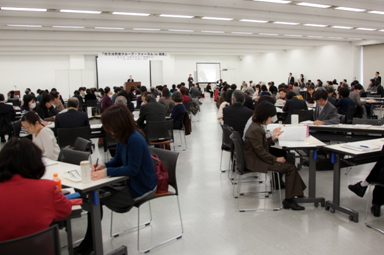
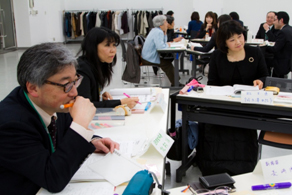

地域において消費者問題に取り組む様々な人々が、情報や意見交換を行う「交流の場」として「地方消費者グループ・フォーラム（関東ブロック）」が３月６日、さいたま市の大宮ソニックシティ 第１展示場で開催されました。
「地方消費者グループ・フォーラム（関東ブロック）」は、昨年度から開催され、第２回目となる今年度は、昨年度の東京から会場を埼玉に移しての開催となりました。
今年度は「もっと つながろう！地域から」をテーマに、関東・甲信越の１都９県から消費者団体や行政関係者など１８９人が参加しました。（写真提供：消費者庁）

松原大臣挨拶（写真提供:消費者庁）
フォーラムは、午前、午後の二部構成で行われ、フォーラム実行委員会委員長の岩岡宏保埼玉消団連事務局長の主催者挨拶で始まりました。最初に内閣府特命担当大臣（消費者及び食品安全）の松原 仁大臣より開催にあたって挨拶をいただきました。
松原大臣は、「消費者の安全、安心のためには、地方自治体や消費者団体をはじめとした地域で活動している多様な方々が、福祉、子育て、環境、産業なども含めた横断的な視点から連携し、地域全体としての対応力を深めていくことが重要です。」として、「このフォーラムをきっかけとして、皆様の交流、連携が深まり、地域における消費者問題への取り組みや消費者行政の活性化につながっていくことを期待いたしております。」とフォーラムへの期待を述べられました。
次に消費者庁報告として福嶋 浩彦消費者庁長官が挨拶され、消費者庁のこの間の取り組みについて報告をいただきました。

基調講演：聖学院大学大学院富沢教授
基調講演は、「もっと つながろう！地域から」を主題に、開催地の埼玉から、聖学院大学大学院教授の富沢賢治氏が講演しました。富沢氏は、今年２０１２年が国連で定めた国際協同組合年であることにふれ、いまこそ均衡のとれた社会が求められること、そのためには、政府セクターと営利企業セクターだけでなく、民間の協同組織のセクターが必要であると語りました。さらに、消費者問題について、消費者団体の連帯の必要性と、行政を含めた多様な主体が消費者問題を共通の問題として認識し、連携をはかり、共に取り組んでいくことが重要と、このフォーラム開催の基調を述べられました。

午後は、多様な主体の連携によって取組まれている消費者問題の事例について、５つの団体よりそれぞれ報告され、各地での多様な取り組みを共有した後、会場内２０テーブルの分散会に分かれ、各地の活動実践の交流とこれからの消費者課題について熱心に話し合われました。
分散会での交流の後は、基調講演や活動事例報告について質疑のほか、分散会のいくつかからグループで話し合ったことの報告がされました。
最後に、今回の関東ブロック・フォーラムの締め括りとして全国消費者団体連絡会の阿南 久事務局長より閉会の挨拶をいただき、今年の関東ブロック・フォーラムを終了しました。
尚、今回の関東ブロック・フォーラムの開催にあたっては、関東・甲信越１都９県から消費者や行政関係者など２２団体と機関で実行委員会をつくり、２０１１年秋から５回の実行委員会を開いて準備してきました。埼玉県消費者団体連絡会は、地元開催県としてフォーラムの成功に向け、関東ブロック・フォーラム実行委員会の一員として加わりました。
※活動事例報告
関係主体の連携により消費者問題に取り組んでいる事例として５つの団体から活動発表されました。
 「ぜったい儲かる」悪質な投資話しにご用心！」/ 杉戸町くらしの会
「ぜったい儲かる」悪質な投資話しにご用心！」/ 杉戸町くらしの会 県内市町村消費生活関連事業調査の取り組み/埼玉消費者被害をなくす会
県内市町村消費生活関連事業調査の取り組み/埼玉消費者被害をなくす会 消費者カレッジ出前講座制度/ 世田谷区、自主学習グループ「ひとえの会」
消費者カレッジ出前講座制度/ 世田谷区、自主学習グループ「ひとえの会」 知っておきたいこれだけは―若者に向けたメッセージ/千葉県消費生活相談員の会
知っておきたいこれだけは―若者に向けたメッセージ/千葉県消費生活相談員の会 家庭での電力削減策 /特定非営利活動法人神奈川県消費者の会連絡会
家庭での電力削減策 /特定非営利活動法人神奈川県消費者の会連絡会